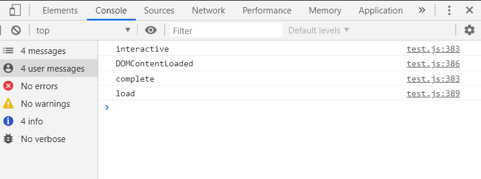

面试高频之js的异步加载
讲这个问题之前， 我们从另一个面试高频问题来切入，
我们的web页面从开始解析到页面渲染完成都经历了什么 ？
1 ， 创建document对象， 开始解析页面， 此时document.readyState = 'loading'
2 , 遇到link标签引入的css文件， 创建线程并异步加载css，继续解析文档
3， 遇到script标签引入的外部脚本 ， 如果script标签的属性设置了defer或者async 则 创建线程异步加载js , 否则同步加载js(阻塞了dom的解析) ， 继续解析文档 （async脚本加载完就执行）
4 ， 遇到img等要加载资源的标签， 正常解析dom 标签 ， 异步加载src , 继续解析文档
5 ， 文档解析完毕 ， document.readyState = 'interactive' ， 所有defer脚本按顺序执行，并且document会触发 DOMContentLoaded事件 ， 标志着程序从同步脚本执行阶段转化成事件驱动阶段
6 ， 当所有async 脚本 加载并执行 完毕 ， img 加载完毕 ， document.readyState = 'complete' ， window 触发 load 事件 。
7 从此 以异步响应的方式处理用户输入， 网络事件等 。。。。。。
ok , 光说没用， 我们来看看真相是否只有一个。。。
document.onreadystatechange = () => {
console.log(document.readyState)
};
document.addEventListener('DOMContentLoaded', () => {
console.log('DOMContentLoaded')
});
window.onload = () => {
console.log('load')
};注意一点， DOMContentLoaded 事件 只能用 addEventListener 来绑定
结果是这样:

按顺序打印出来了 。。。
上文我们提到只有设置了defer /async 的 script 脚本 才能异步加载 ,
注意defer 有些低版本浏览器不兼容，
async是W3C的标准，但只能在引入外部js文件时使用，
当然，我们最常用的是把script标签放在body 后面 ，这样就不会阻塞dom解析
还有一种情况， 动态添加的script脚本也是异步加载的， 基于此 我们来封装一个 异步加载script脚本的函数
function loadScript (url, callback) { // 传入url , 和要执行的回调函数
const script = document.createElement('script');
script.type = 'text/javascript'; // 创建一个script标签
if (script.readyState) { // 做兼容
script.onreadystatechange = () => { // readyState变化触发
if (script.readyState === 'complete' || script.readyState === 'loaded') { // 兼容
callback(); // 加载完执行回调
}
}
} else {
script.onload = () => {
callback(); // 加载完执行回调
}
}
script.src = url;
document.head.appendChild(script); // 插入head中
}以上就是 js 异步加载 的 全部内容了， 欢迎小伙伴们补充